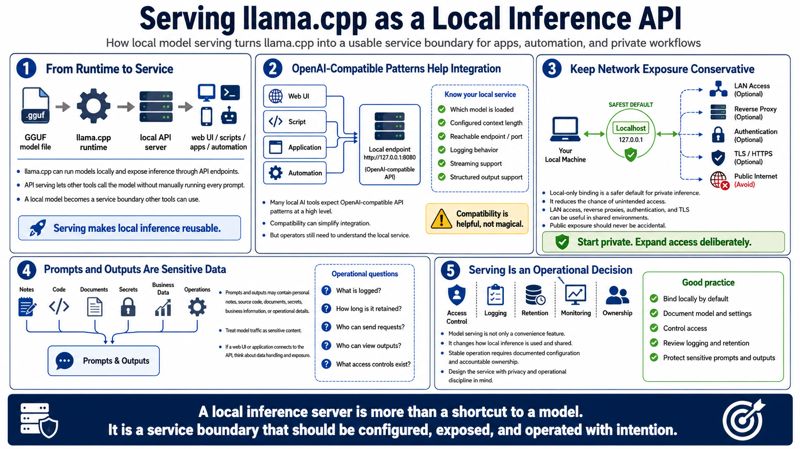

Serving llama.cpp over an API
Connecting to LMS... Progress: in progress

Narration
llama.cpp can be used as a local inference runtime and, at a high level, as a server that exposes model inference through API endpoints. API serving lets web UIs, scripts, applications, and automation call the model without manually running each prompt from a terminal. This turns a local model into a service boundary that other tools can use.
Many local AI tools expect OpenAI-compatible API patterns at a high level. Compatibility can make integration easier, but it does not remove the need to understand the local service. Operators still need to know which model is loaded, what context length is configured, what endpoint is reachable, how requests are logged, and whether streaming or structured output is supported.
Network exposure should be conservative. Local-only binding is a safer default for a private inference server because it reduces the chance that unintended users can reach the endpoint. LAN access, reverse proxies, authentication, and TLS may be useful in shared environments, but they should be deliberate. Avoid accidental public exposure of private inference services.
Prompts and outputs should be treated as potentially sensitive data. They may include personal notes, source code, documents, secrets, business information, or operational details. If an API server is connected to a web UI or application, think about logging, retention, access control, and who can send requests. Serving a model is not just a convenience feature. It is an operational decision.